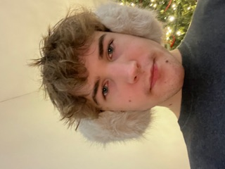

Matthias Hunsaker | WDD 130
Hello! My name is Matthias Hunsaker and I am from Yorba Linda California, USA. I like to work on cars and play the drums. I have been playing the drums since I was in 9th grade and also know how to play the trumpet. I also enjoying astronomy and like to stargaze. I enjoy doing astrophotography through my telescope. I am excited to start learning about Web Devlopment through Brigham Young University Idaho. I am the oldest of 5 children. I hope to use my education to get a good job to work through school. When I am finished with web development I hope to continue my education at the University of Utah and study Aerospace Engineering or Astrodynamics. I have just moved from Paris, France where my family lives to Yorba Linda, California. Where my family is originally from. I have moved around alot in my youth because my dad was in the army. So I have lived in serveral different places during my life. I enjoy going to the beach and spending lots of time in the sun outside. I also like to work out, read and paint Warhammer minatures in my spare time.